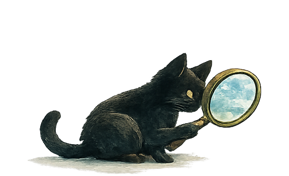

Beobachten
Die Welt zwischen den Bildern
Wie wir Wirklichkeit aus Fragmenten zusammensetzen
Light up Reader
Jede Erkenntnis beginnt mit einer Beobachtung. Nicht alles, was auffällt, muss sofort erklärt werden.

Beobachten
Wie wir Wirklichkeit aus Fragmenten zusammensetzen
Die meisten von uns erleben nur einen kleinen Ausschnitt der Welt unmittelbar.
Wir waren nicht bei historischen Ereignissen dabei. Wir haben nicht jedes Land bereist, nicht jede Krankheit erlebt, nicht jeden Beruf ausgeübt und nicht jede Lebensrealität kennengelernt. Trotzdem besitzen wir erstaunlich konkrete Vorstellungen davon, wie die Welt aussieht.
Woher kommen diese Vorstellungen?
Ein Teil entsteht aus eigenen Erfahrungen. Ein anderer Teil aus Erzählungen. Aus Büchern, Filmen, Nachrichten, Dokumentationen, sozialen Medien und Gesprächen mit anderen Menschen.
Daran ist zunächst nichts Besonderes. Niemand kann alles selbst erleben.
Der entscheidende Moment kommt später.
Wer eine Fremdsprache lernt, kennt das Phänomen vielleicht. Man liest einen Satz, versteht nicht jedes einzelne Wort und glaubt dennoch, den Inhalt verstanden zu haben. Das Gehirn ergänzt die fehlenden Informationen aus dem Zusammenhang heraus. Oft funktioniert das erstaunlich gut.
Manchmal jedoch stellt sich später heraus, dass ein einziges unbekanntes Wort die Bedeutung des gesamten Satzes verändert hat.
Unser Bild von der Welt entsteht auf ähnliche Weise.
Auch hier verfügen wir meist nur über Fragmente. Ausschnitte. Einzelne Bilder. Kurze Berichte. Persönliche Erfahrungen. Das Gehirn verbindet diese Fragmente zu einem Gesamtbild und füllt die Lücken dazwischen selbstständig auf.
Das Problem besteht nicht darin, dass wir Lücken füllen.
Das Problem beginnt dort, wo wir vergessen, dass es Lücken gibt.
Medien spielen dabei eine besondere Rolle. Sie zeigen uns nicht die Wirklichkeit selbst. Sie zeigen Ausschnitte von Wirklichkeit. Jede Nachricht, jede Dokumentation und jeder Film muss auswählen, was gezeigt wird und was nicht. Bereits diese Auswahl verändert die Wahrnehmung.
Hinzu kommt die Logik der Aufmerksamkeit.
Geschichten benötigen Konflikte. Filme brauchen Spannung. Nachrichten berichten bevorzugt über das Außergewöhnliche. Extreme Ereignisse erzeugen mehr Aufmerksamkeit als alltägliche Erfahrungen.
So entsteht leicht ein verzerrtes Bild.
In Filmen erleben wir dramatische Geburten, aber selten die langen Stunden des Wartens. Wir sehen die große Liebe oder die spektakuläre Trennung, aber kaum die vielen kleinen Entscheidungen, aus denen Beziehungen bestehen. Kinder erscheinen als Engel oder als Katastrophe, selten als das, was die meisten Kinder tatsächlich sind: Menschen mit guten und schlechten Tagen.
Die Wirklichkeit verschwindet dadurch nicht.
Aber sie rückt in den Hintergrund.
Mit der Zeit kann der Eindruck entstehen, die Welt bestehe hauptsächlich aus Extremen.
Eine der größten Herausforderungen unserer Zeit liegt daher nicht in der Frage, ob Medien lügen.
Sie liegt in der Fähigkeit, zwischen Wirklichkeit und Darstellung zu unterscheiden.
Denn jede Darstellung ist eine Oberfläche.
Und Oberflächen sind nicht bedeutungslos.
Aber sie sind selten das Ganze.
Wer verstehen möchte, was sich unter der Wasseroberfläche befindet, muss bereit sein, tiefer zu schauen.
Nicht alles, was sichtbar ist, ist wichtig.
Und nicht alles, was wichtig ist, wird sichtbar.
Beobachten
Warum eine richtige Beschriftung trotzdem zu wenig Wahrheit enthalten kann.

Stellen wir uns eine Schachtel vor.
Auf ihr steht:
„Dunkle Ameisen“
Eine einfache Beschreibung. Eine praktische Ordnungshilfe. Schließlich kann niemand jede einzelne Ameise betrachten, bevor er die Schachtel öffnet.
Also vertrauen wir dem Etikett.
Von außen wirkt alles eindeutig.
Doch was geschieht, wenn wir die Schachtel öffnen?
Plötzlich entdecken wir Unterschiede.
Schwarze Ameisen. Dunkelgraue Ameisen. Anthrazitfarbene Ameisen.
Große Ameisen. Kleine Ameisen.
Schnelle Ameisen. Langsame Ameisen.
Die Beschriftung war nicht falsch.
Aber sie war unvollständig.
Sie hat etwas Wahres gesagt, ohne die ganze Wahrheit zu erzählen.
Daran ist zunächst nichts Besonderes.
Unser Gehirn arbeitet ständig auf diese Weise. Die Welt ist zu komplex, um jedes Detail einzeln zu betrachten. Deshalb bilden wir Kategorien. Wir unterscheiden zwischen Tag und Nacht, Wald und Wiese, Hund und Katze. Kategorien helfen uns, uns zu orientieren.
Das Problem beginnt nicht mit der Kategorie.
Das Problem beginnt mit dem, was wir daraus machen.
Nehmen wir an, einige der dunkelgrauen Ameisen in unserer Schachtel verhalten sich aggressiv. Sie beißen häufiger als andere oder verteidigen ihr Nest besonders energisch.
Aus einer einzelnen Beobachtung entsteht nun eine Vermutung.
Aus mehreren Beobachtungen entsteht eine Verallgemeinerung.
Und irgendwann sagt jemand:
„Dunkle Ameisen sind aggressiv.“
Was zunächst wie eine harmlose Vereinfachung erscheint, verändert den Blick auf jede einzelne Ameise in der Schachtel.
Die schwarzen Ameisen werden nicht mehr als schwarze Ameisen gesehen.
Die friedlichen Ameisen werden nicht mehr als friedliche Ameisen gesehen.
Alle verschwinden hinter einem gemeinsamen Etikett.
Plötzlich ist nicht mehr das Individuum entscheidend, sondern die Kategorie.
Genau hier entstehen viele Vorurteile.
Nicht nur gegenüber Ameisen.
Auch gegenüber Menschen.
Wir begegnen einem Einzelnen und schließen auf Viele.
Wir machen Erfahrungen mit Individuen und übertragen sie auf ganze Gruppen.
Wir sehen eine Eigenschaft und behandeln sie, als sei sie ein Wesensmerkmal.
Dabei besteht die Wirklichkeit selten aus Schubladen.
Sie besteht aus Menschen.
Aus Individuen.
Aus Geschichten.
Aus Erfahrungen.
Aus Widersprüchen.
Kein Mensch passt vollständig in die Kategorien, die wir ihm zuschreiben. Nicht seine Herkunft. Nicht seine Hautfarbe. Nicht sein Geschlecht. Nicht seine Religion. Nicht sein Beruf. Nicht einmal seine Nationalität erzählt die ganze Geschichte.
Kategorien können hilfreich sein.
Sie helfen uns, die Welt zu ordnen.
Doch sobald wir vergessen, dass sie Vereinfachungen sind, werden sie gefährlich.
Denn dann beginnen wir, Menschen nicht mehr als Menschen zu betrachten.
Wir sehen nur noch das Etikett.
Die eigentliche Herausforderung besteht nicht darin, alle Kategorien abzuschaffen.
Sie besteht darin, sich immer wieder bewusst zu machen, dass zwischen dem Etikett auf der Schachtel und dem, was sich darin befindet, ein Unterschied besteht.
Wer genauer hinsieht, entdeckt etwas Erstaunliches:
Je näher wir einem Menschen kommen, desto weniger passt er in die Schublade, in die wir ihn zuvor gesteckt hatten.
Das ist kein Fehler.
Es ist ein Hinweis darauf, wie Wirklichkeit beschaffen ist.